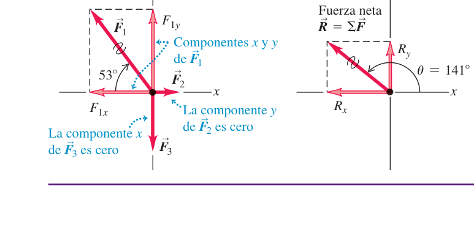
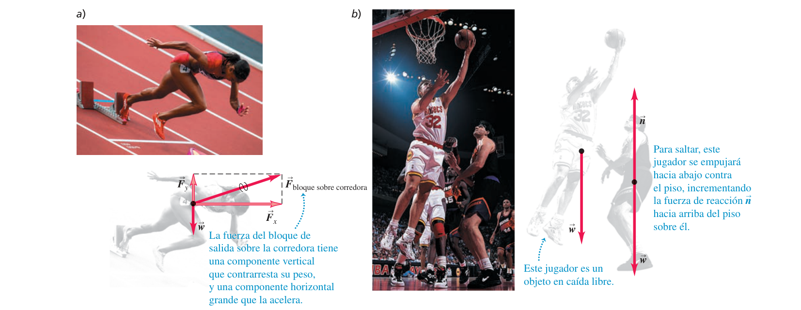

Leyes del movimiento de Newton
Las tres reglas que gobiernan cómo las fuerzas cambian (o no cambian) el movimiento: por qué nada se mueve sin motivo, por qué empujar más fuerte acelera más, y por qué toda fuerza tiene una "réplica" en el cuerpo que la ejerce.
0Antes de empezar U p.101
Prerrequisitos: vectores y componentes (tema 1: suma por componentes, magnitud y ángulo corrigiendo cuadrante) y cinemática 1D/2D completa (temas 2-3: las cuatro ecuaciones de aceleración constante, $a=\Delta v/\Delta t$, $v^2=v_0^2+2a\Delta x$). Este tema no añade matemáticas nuevas: añade la causa del movimiento — hasta ahora describíamos cómo se mueve algo, ahora explicamos por qué.
Mapa del tema: la sección 4.1 define qué es una fuerza y cómo se suman varias (repaso de vectores aplicado a un contexto nuevo). La 4.2 (primera ley) dice qué pasa cuando la suma es cero: nada cambia. La 4.3 (segunda ley) es el núcleo del tema: cuantifica qué pasa cuando la suma no es cero, $\sum\vec F=m\vec a$, y por primera vez conectamos "fuerza" (esta parte) con "aceleración" (temas 2-3). La 4.4 aclara la diferencia, muy examinada, entre masa y peso. La 4.5 (tercera ley) introduce que las fuerzas siempre vienen en parejas entre dos cuerpos distintos. La 4.6 cierra con la técnica que usarás en todos los problemas de dinámica a partir de aquí (tema 5 en adelante): el diagrama de cuerpo libre.
Revisando los exámenes de convocatorias pasadas, no se ha encontrado ningún ejercicio cuyo tema principal sea específicamente las leyes de Newton "puras" (sin fricción, planos inclinados o poleas): ese tipo de problema aparece ya combinado con la segunda ley en el tema 5 (aplicación de las leyes de Newton), que es donde caen los problemas de examen reales de dinámica más elaborados. El Tema 4 sí aparece como ingrediente secundario en tres problemas de examen que son, en el fondo, «cinemática (tema 2) + segunda ley»: el cohete con fuerza variable, el satélite que se estrella y la bala que penetra un material — los tres ya resueltos como X2, X3 y X4 en el Tema 2. Por eso los nueve ejercicios resueltos de esta página son del solucionario oficial (E), elegidos y ordenados para dejarte muy afianzadas las tres leyes antes de complicarlas con fricción en el tema 5.
1Fuerza e interacciones
En el lenguaje cotidiano, "fuerza" es un empujón o un jalón. Físicamente, una fuerza es siempre el resultado de una interacción entre dos cuerpos: no existe una fuerza "suelta", flotando sin un cuerpo que la ejerza y otro que la reciba. Algunas fuerzas necesitan contacto físico (empujar una caja, la tensión de una cuerda, la fricción); otras actúan a distancia sin tocarse (la gravedad, el magnetismo) — se llaman fuerzas de largo alcance.
U p.102Una fuerza es una cantidad vectorial: tiene magnitud (¿cuánto empuja o jala?) y dirección (¿hacia dónde?). Se dibuja como una flecha cuya longitud es proporcional a su magnitud. Su unidad en el SI es el newton (N), que se define formalmente en la sección 4.3.
U p.103- Normal $\vec n$: fuerza de contacto que una superficie ejerce perpendicular a sí misma sobre el cuerpo que la toca (U usa $n$ en cursiva para no confundirla con el newton, N).
- Fricción $\vec f$: fuerza de contacto paralela a la superficie, que se opone al deslizamiento (o tendencia a deslizar) entre el cuerpo y la superficie.
- Tensión $\vec T$: fuerza que una cuerda, cable o cadena tirante ejerce sobre lo que sujeta en sus extremos.
- Peso $\vec w$: fuerza de largo alcance que la gravedad ejerce sobre el cuerpo (se desarrolla en la sección 4.4). A diferencia de las otras tres, no necesita contacto y actúa siempre, esté el cuerpo en reposo, moviéndose o en el aire.
Los experimentos muestran que cuando varias fuerzas actúan a la vez sobre un cuerpo en el mismo punto, su efecto combinado es igual al de una sola fuerza igual a la suma vectorial de todas ellas (la fuerza neta o resultante):
$$\vec R=\sum\vec F=\vec F_1+\vec F_2+\cdots \qquad\text{(ec. 4.1)}$$Por componentes (exactamente el método del tema 1):
$$R_x=\sum F_x \qquad R_y=\sum F_y \qquad\text{(ec. 4.2)}$$Cada componente puede ser positiva, negativa o cero — cuidado con los signos al sumar. En 3D se añade $R_z=\sum F_z$, y la magnitud de la fuerza neta es $R=\sqrt{R_x^2+R_y^2(+R_z^2)}$.
U p.103Tres luchadores tiran del mismo cinturón de campeonato con tres fuerzas horizontales: $F_1=250$ N a $127°$, $F_2=50$ N a $0°$, $F_3=120$ N a $270°$ (medidos desde el eje $+x$). Halla la fuerza neta.
- Componentes de cada fuerza con $F_x=F\cos\theta$, $F_y=F\sin\theta$ (tema 1): $F_{1x}=-150$ N, $F_{1y}=200$ N; $F_{2x}=50$ N, $F_{2y}=0$; $F_{3x}=0$, $F_{3y}=-120$ N.
- Suma por componentes (ec. 4.2): $R_x=-150+50+0=-100$ N; $R_y=200+0-120=80$ N.
- Magnitud: $R=\sqrt{(-100)^2+80^2}=128$ N.
- Ángulo: $\arctan(80/{-100})=-39°$, pero $R_x<0$, $R_y>0$ sitúan a $\vec R$ en el 2º cuadrante → suma 180°: $\theta=141°$.
El luchador 1, que ejerce la mayor fuerza individual (250 N), es quien "gana" el forcejeo — coherente con que $\vec R$ apunta bastante cerca de su dirección.
U p.104
2Primera ley de Newton
Aristóteles pensaba que hacía falta una fuerza para mantener algo en movimiento. Newton corrige esa intuición: lo natural es que un objeto siga haciendo lo que ya estaba haciendo (parado o moviéndose en línea recta a velocidad constante) a menos que algo se lo impida. Un disco de hockey desliza sobre hielo casi sin fricción y apenas frena: no necesita ningún empujón continuo para seguir moviéndose, solo lo necesitaría para cambiar su movimiento.
"Un cuerpo sobre el que no actúa una fuerza neta se mueve con velocidad constante (que puede ser cero) y aceleración cero."
U p.105La tendencia de un cuerpo a mantener su estado de movimiento (a "resistirse" a cambiar de velocidad) se llama inercia. Cuando la fuerza neta sobre un cuerpo es cero, se dice que está en equilibrio:
$$\sum\vec F=0 \qquad\text{(ec. 4.3)}$$Equilibrio no significa "sin fuerzas": significa que las fuerzas que hay se cancelan entre sí.
U p.105La primera ley solo es válida vista desde un sistema de referencia inercial: uno que no acelera. La superficie de la Tierra es, en la mayoría de los problemas de esta asignatura, una aproximación suficientemente buena de sistema inercial (aunque gira y orbita, esos efectos son pequeños a la escala de los problemas del curso). Desde un sistema de referencia que sí acelera (un coche frenando, por ejemplo), la primera ley parece fallar: los pasajeros "salen despedidos" hacia delante sin que ninguna fuerza real los empuje — en realidad es su inercia, que los hace seguir en su estado de movimiento mientras el coche cambia el suyo. Por eso a la primera ley también se le llama ley de la inercia: define qué es un sistema inercial (aquel en el que se cumple). Cualquier sistema que se mueva con velocidad constante respecto a uno inercial es también inercial — solo los sistemas que aceleran dejan de serlo.
U p.107Un coche muy potente circula a 250 km/h constantes; otro, mucho menos potente, a 75 km/h constantes. ¿Sobre cuál es mayor la fuerza neta? En ninguno: ambos van a velocidad constante, así que en los dos $\sum\vec F=0$. Es la pista (no el motor directamente) la que ejerce, gracias al motor, una fuerza hacia delante mayor sobre el coche rápido que sobre el lento, pero esa fuerza solo sirve para compensar exactamente la resistencia del aire y la fricción — no "sobra" fuerza para acelerar, porque si sobrara, el coche no iría a velocidad constante.
U p.107"Si algo se mueve, tiene que haber una fuerza neta empujándolo en la dirección del movimiento" es falso en general. Hace falta una fuerza neta para acelerar (cambiar la velocidad), no para tener velocidad. Un objeto puede moverse a velocidad constante para siempre con fuerza neta exactamente cero — es literalmente lo que dice la primera ley.
3Segunda ley de Newton
Si la fuerza neta no es cero, el cuerpo sí acelera — y cuanto más empujas, más rápido cambia la velocidad; cuanto más "pesada" (con más masa) es la cosa que empujas, menos cambia su velocidad para la misma fuerza. Empujar un carrito de la compra vacío lo acelera mucho más que empujarlo lleno con la misma fuerza: la masa mide esa resistencia a acelerar.
"Si una fuerza externa neta actúa sobre un cuerpo, éste se acelera. La dirección de la aceleración es la misma que la de la fuerza neta. El vector de fuerza neta es igual a la masa del cuerpo multiplicada por su aceleración."
U p.111Por componentes, cada eje se trata por separado (exactamente como en cinemática, temas 2-3):
$$\sum F_x=ma_x \qquad \sum F_y=ma_y \qquad \sum F_z=ma_z \qquad\text{(ec. 4.7)}$$La razón $|\sum\vec F|/a$ es constante para un cuerpo dado, sin importar la magnitud de la fuerza: a eso se le llama masa inercial (o simplemente masa) del cuerpo — es una medida de cuánto se resiste a cambiar de velocidad, no es lo mismo que el peso (sección 4.4). La ecuación 4.6 solo es válida si la masa $m$ es constante (no vale, por ejemplo, para un cohete que va quemando combustible) y, como la primera ley, solo en sistemas de referencia inerciales.
U p.110$\sum\vec F=m\vec a$ es una igualdad, no una receta para inventar una fuerza nueva llamada "fuerza de aceleración" o "fuerza $ma$". El lado izquierdo es la suma de las fuerzas reales (peso, normal, tensión, fricción…) que otros cuerpos ejercen sobre el que estudias; el lado derecho, $m\vec a$, es solo su efecto. Además, en esa suma solo entran fuerzas externas (ejercidas por otros cuerpos): no puedes acelerarte tirando de tu propio cinturón, por mucho que "sumes" esa fuerza — es interna, actúa y se cancela dentro del mismo sistema.
U p.111Se define $1\ \text{N} = 1\ \text{kg}\cdot\text{m/s}^2$: la fuerza que le da a una masa de 1 kg una aceleración de 1 m/s².
U p.110Un trabajador aplica una fuerza horizontal de 20 N a una caja de 40 kg de masa sobre un piso sin fricción. Como no hay fricción, la única fuerza horizontal es la aplicada (el peso y la normal se cancelan verticalmente, $a_y=0$):
$$a_x=\frac{\sum F_x}{m}=\frac{20\ \text{N}}{40\ \text{kg}}=0.50\ \text{m/s}^2$$ U p.112Una botella de 0.45 kg desliza sobre un mostrador liso, se suelta a 2.8 m/s y se frena por la fricción hasta pararse tras recorrer 1.0 m. Aquí se combina el tema 2 con este tema: primero, cinemática (ec. $v^2=v_0^2+2a\Delta x$) da la aceleración, $a_x=(0^2-2.8^2)/(2\times1.0)=-3.9\ \text{m/s}^2$; después, la segunda ley traduce esa aceleración en la fuerza de fricción que la produjo: $f_x=ma_x=0.45\times(-3.9)=-1.8$ N (1.8 N, opuesta al movimiento).
U p.113Cuando un problema da datos de posición/velocidad/tiempo sin mencionar fuerzas directamente, casi siempre hay que pasar primero por la cinemática (temas 2-3) para obtener $a$, y solo entonces aplicar $\sum F=ma$ (o al revés: fuerza conocida → $a=\sum F/m$ → cinemática para tiempo/distancia). Identificar qué falta (¿aceleración o fuerza?) es el primer paso de cualquier problema de dinámica.
4Masa y peso
En el lenguaje cotidiano se usan "masa" y "peso" como sinónimos, pero en física son cosas distintas. Es indispensable no confundirlas antes de seguir.
U p.114El peso de un cuerpo es la fuerza gravitacional que la Tierra (u otro astro) ejerce sobre él. Al ser una fuerza, se mide en newtons y depende de dónde está el cuerpo:
$$w=mg \qquad\text{(ec. 4.8-4.9)}$$donde $g$ es la aceleración de caída libre en ese lugar. En la Luna, $g=1.62\ \text{m/s}^2$ (frente a $9.80\ \text{m/s}^2$ en la Tierra): un cuerpo pesa allí aproximadamente $1/6$ de lo que pesa en la Tierra, con exactamente la misma masa en ambos sitios.
U p.114| Masa | Peso | |
|---|---|---|
| Qué es | Propiedad del cuerpo (resistencia a acelerar) | Una fuerza (la gravedad tirando de él) |
| Unidad SI | kg | N |
| ¿Cambia con el lugar? | No | Sí, proporcional a $g$ local |
$w=mg$ sale de aplicar $\sum F=ma$ a un cuerpo en caída libre ($a=g$), pero eso no significa que el peso solo "exista" mientras el cuerpo cae: el peso actúa en todo momento, esté el cuerpo cayendo, en reposo sobre una mesa o subiendo en un ascensor — solo que, salvo en caída libre, hay otras fuerzas (normal, tensión…) que se combinan con él. El valor de $g$ varía ligeramente según el lugar (entre 9.78 y 9.82 m/s² en la superficie terrestre); en este curso se usa $g=9.80\ \text{m/s}^2$ salvo que el problema dé otro valor.
U p.114Un Rolls-Royce Phantom de peso $w=2.49\times10^4$ N sufre una fuerza neta de frenado $\sum F=-1.83\times10^4$ N. Antes de poder usar $\sum F=ma$ hace falta la masa, no el peso: $m=w/g=2.49\times10^4/9.80=2540$ kg. Entonces $a=\sum F/m=-1.83\times10^4/2540=-7.20\ \text{m/s}^2$.
U p.115Si un dato viene en newtons (o "pesa tantos N") y necesitas aplicar $\sum F=ma$, primero divide entre $g$ para obtener la masa en kg. Multiplicar directamente el número en N por una aceleración es un error de unidades (mezclas N con kg), aunque a veces "cuadre" numéricamente por casualidad.
5Tercera ley de Newton
Cuando empujas la pared, la pared te empuja a ti con la misma fuerza en sentido contrario — por eso te duele la mano. Toda fuerza es una interacción entre dos cuerpos, así que siempre viene acompañada de otra fuerza igual y opuesta que el segundo cuerpo ejerce sobre el primero.
"Si el cuerpo A ejerce una fuerza sobre el cuerpo B (una 'acción'), entonces, el cuerpo B ejerce una fuerza sobre el cuerpo A (una 'reacción'). Estas dos fuerzas tienen la misma magnitud pero dirección opuesta, y actúan sobre cuerpos diferentes."
$$\vec F_{A\ \text{sobre}\ B}=-\vec F_{B\ \text{sobre}\ A} \qquad\text{(ec. 4.10)}$$ U p.116Los dos miembros de un par acción-reacción actúan siempre sobre cuerpos diferentes — por definición, nunca sobre el mismo cuerpo. La tercera ley vale tanto para fuerzas de contacto (al empujar un coche averiado, tu fuerza sobre el coche es igual en magnitud a la que el coche ejerce sobre ti; lo que realmente cuesta es vencer la masa del coche y la fricción de sus ruedas, no la reacción en sí) como para fuerzas de largo alcance (una manzana sobre una mesa: la Tierra atrae a la manzana con su peso, y la manzana atrae a la Tierra con exactamente la misma fuerza, aunque en sentido contrario).
U p.116Un cantero tira de un bloque de piedra con una cuerda. Si la cuerda es ideal (sin masa) o está en equilibrio, la tensión que transmite es la misma en sus dos extremos: si el cantero tira con 50 N, el bloque recibe 50 N — no 100 N ni 25 N. La cuerda no "gasta" ni "duplica" la fuerza, simplemente la transmite de un extremo a otro.
U p.118Si la fuerza con que el hombre jala de la cuerda es igual y opuesta a la fuerza con que la cuerda jala de él (tercera ley), ¿por qué entonces el bloque se mueve mientras el hombre permanece en el mismo lugar? La resolución: la 3ª ley solo dice que esas dos fuerzas son iguales entre sí; para saber si algo acelera hay que aplicar la 2ª ley a cada cuerpo por separado, con su propia masa y contando todas las fuerzas sobre él, no solo la del par. La diferencia clave aquí es la fricción del suelo: las suelas del hombre están diseñadas para no resbalar (mucha fricción estática con el suelo), mientras que la base del bloque desliza con facilidad (poca fricción) — así que la misma tensión de la cuerda es suficiente para acelerar al bloque, pero no al hombre, que la fricción del suelo mantiene prácticamente clavado en su sitio.
U p.119Emparejar como "acción-reacción" el peso de un cuerpo con la normal que lo sostiene (por ejemplo, una manzana sobre una mesa). No lo son: ambas actúan sobre el mismo cuerpo (la manzana) y son de naturaleza distinta (una es gravitacional, la otra de contacto). El verdadero par del peso es (Tierra tira de la manzana) ↔ (manzana tira de la Tierra); el verdadero par de la normal es (mesa empuja a la manzana) ↔ (manzana empuja a la mesa) — cuatro fuerzas en total, no dos, y cada par vive en cuerpos distintos.
U p.1176Diagramas de cuerpo libre
Con tres leyes tan sencillas, ¿por qué cuesta tanto resolver problemas de dinámica? Porque hay que identificar correctamente qué fuerzas actúan sobre quién, y es fácil colar una fuerza que no toca, olvidar una que sí, o mezclar las fuerzas de dos cuerpos distintos. La solución es un método casi mecánico: aislar un único cuerpo y dibujar solo lo que le pasa a él.
- Elige un solo cuerpo (el "sistema") y dibújalo aislado, sin lo que lo rodea.
- Dibuja solo las fuerzas externas que actúan sobre ese cuerpo (peso, normales, tensiones, fricción, empujones aplicados) — nunca las fuerzas que él ejerce sobre otros cuerpos.
- Nunca dibujes las dos fuerzas de un mismo par acción-reacción en el mismo diagrama: por definición actúan sobre cuerpos distintos, así que cada una vive en el DCL de un cuerpo diferente.
- Coloca un sistema de ejes coherente (a menudo conviene alinear un eje con la dirección del movimiento o de una fuerza conocida) y descompón las fuerzas que no estén ya sobre los ejes.
- Aplica $\sum F_x=ma_x$, $\sum F_y=ma_y$ (ec. 4.7) componente a componente.
Esta técnica se usará constantemente a partir del tema 5 (aplicación de las leyes de Newton) en adelante: es, con diferencia, la herramienta más rentable de toda la asignatura de mecánica.
U p.120
Dibujar en el DCL de un cuerpo una fuerza que en realidad actúa sobre otro cuerpo (por ejemplo, meter la fuerza que la caja ejerce sobre la mesa en el diagrama de la caja) o dibujar un par acción-reacción completo en un único diagrama. Un DCL correcto siempre tiene todas sus flechas aplicadas sobre el mismo punto/cuerpo, y cada una representa una fuerza que otro cuerpo ejerce sobre él.
7Ejercicios resueltos
Como se indica en «Antes de empezar», este tema no tiene ningún ejercicio de examen real dedicado en solitario: aparece mezclado con fricción/planos/poleas en el tema 5, y como ingrediente secundario en tres problemas ya resueltos en el Tema 2 (X2, X3, X4). Los nueve ejercicios siguientes son del solucionario oficial (E), ordenados de más sencillo a más elaborado, para dejar bien afianzadas las tres leyes.
E1 — Problema 4.9: masa a partir de fuerza y aceleración E
Una caja descansa sobre un estanque helado sin fricción, que actúa como una superficie horizontal sin rozamiento. Si un pescador aplica una fuerza horizontal de 48.0 N a la caja y produce una aceleración de 2.20 m/s², ¿cuál es la masa de la caja?
- Como no hay fricción, la única fuerza horizontal es la aplicada (el peso y la normal se cancelan en el eje vertical, $a_y=0$): $\sum F_x=F=48.0$ N.
- Despejando de la segunda ley (ec. 4.6): $m=\dfrac{\sum F_x}{a_x}=\dfrac{48.0\ \text{N}}{2.20\ \text{m/s}^2}=21.8$ kg.
E2 — Problema 4.17: cuidado, un peso no es una masa E
Supermán lanza un peñasco de 2400 N a un adversario. ¿Qué fuerza horizontal debe aplicar al peñasco para darle una aceleración horizontal de 12.0 m/s²?
- 2400 N es un peso, no una masa. Antes de aplicar $\sum F=ma$ hace falta convertir con $w=mg$ (sección 4.4): $m=w/g=2400/9.80=244.9$ kg.
- Fuerza necesaria: $F=ma=244.9\times12.0=2940$ N.
- Comprobación de sentido: $F/w=2940/2400=1.22>1$, coherente con pedir una aceleración (12.0 m/s²) mayor que $g$ (9.80 m/s²) — hace falta más fuerza que el propio peso.
E3 — Problema 4.24: la estudiante y la Tierra, tercera ley aplicada E
Una estudiante de 45 kg salta desde un trampolín, adquiriendo una aceleración hacia abajo (hacia la Tierra) de 9.8 m/s². La masa de la Tierra es $6.0\times10^{24}$ kg. ¿Cuál es la aceleración de la Tierra correspondiente hacia ella?
- La fuerza sobre la estudiante es su peso: $w=mg=45\times9.8=441$ N (esto ya es, en sí mismo, la 2ª ley aplicada a ella).
- Por la 3ª ley, la estudiante ejerce sobre la Tierra una fuerza de la misma magnitud, 441 N, en sentido contrario — pero sobre un cuerpo distinto (la Tierra, no ella).
- Aplicando la 2ª ley a la Tierra con su propia masa: $a_{\text{Tierra}}=F/m_{\text{Tierra}}=441/(6.0\times10^{24})=7.4\times10^{-23}\ \text{m/s}^2$.
- Interpretación: las fuerzas son exactamente iguales, pero como $a=F/m$, las aceleraciones están en razón inversa a las masas — por eso, aunque la Tierra "sube" hacia la estudiante, ese movimiento es completamente imperceptible.
E4 — Problema 4.7: un patinador frenando, cinemática + segunda ley E
Un patinador sobre hielo de 68.5 kg que se mueve a 2.40 m/s se detiene uniformemente en 3.52 s por la fricción del hielo contra los patines. ¿Qué fuerza de fricción (magnitud y dirección) actúa sobre el patinador?
- Cinemática primero (tema 2, $a=\Delta v/\Delta t$): $a_x=\dfrac{0-2.40}{3.52}=-0.682\ \text{m/s}^2$.
- Segunda ley: $f_x=ma_x=68.5\times(-0.682)=-46.7$ N, es decir, 46.7 N opuesta al sentido del movimiento.
E5 — Problema 4.37: el lanzamiento de béisbol, sin tiempo dado E
El lanzamiento de béisbol más rápido medido es de 46 m/s. Una pelota de béisbol suele tener una masa de 145 g. Si el lanzador ejerció su fuerza (suponiéndola horizontal y constante) a lo largo de 1.0 m: a) ¿qué fuerza produjo sobre la pelota durante este lanzamiento récord? b) Dibuja los diagramas de cuerpo libre de la pelota durante el lanzamiento y justo después de salir de la mano.
- a) No hay tiempo, así que se usa la ecuación de cinemática sin $t$ (tema 2): $v^2=v_0^2+2a\Delta x \Rightarrow a=\dfrac{v^2}{2\Delta x}=\dfrac{46^2}{2\times1.0}=1058\ \text{m/s}^2$.
- Segunda ley: $F=ma=0.145\times1058=153$ N (tratando el movimiento como horizontal, despreciando el peso).
- Comparación: el peso de la pelota es $w=0.145\times9.8=1.42$ N; $F/w\approx108$ — durante el lanzamiento, la fuerza del brazo es unas 108 veces mayor que el propio peso de la pelota, lo que justifica despreciar el peso frente a esa fuerza.
- b) Durante el lanzamiento: actúan la fuerza de la mano (horizontal, 153 N) y el peso (1.42 N, hacia abajo, pequeño frente a la anterior). Justo después de soltarla: la mano deja de tocar la pelota, así que desaparece esa fuerza; solo queda el peso, hacia abajo. No hay ninguna "fuerza del lanzamiento" que siga acompañando a la pelota en el aire.
E6 — Problema 4.36: "se detiene en una moneda" — comprobar un anuncio absurdo E
Un anuncio afirma que cierto coche de 850 kg puede "detenerse en una moneda de diez centavos" (diámetro 1.8 cm) al frenar desde 45.0 km/h. ¿Qué fuerza media de frenado se necesitaría?
- Convertir a SI: $v_0=45.0\ \text{km/h}=12.5\ \text{m/s}$; $d=1.8\ \text{cm}=0.018\ \text{m}$.
- Deceleración con $v^2=v_0^2+2a d$ (llega a $v=0$): $a=-\dfrac{v_0^2}{2d}=-\dfrac{12.5^2}{2\times0.018}=-4340\ \text{m/s}^2$ (unas 443 veces $g$).
- Fuerza: $F=m|a|=850\times4340=3.7\times10^6$ N — unas 440 veces el propio peso del coche ($w=850\times9.8=8330$ N).
- Conclusión: es físicamente absurdo; ningún sistema de frenos real puede ejercer semejante fuerza. El "anuncio" es imposible según la propia segunda ley de Newton.
E7 — Problema 4.8: peso aparente en un ascensor E
Una persona de peso 625 N está de pie sobre una báscula dentro de un ascensor que acelera hacia arriba a 2.50 m/s². a) ¿Qué marca la báscula? b) Si además lleva un paquete de 3.85 kg colgado de una cuerda vertical, ¿qué tensión hay en la cuerda?
- Masa de la persona: $m=w/g=625/9.80=63.8$ kg.
- a) La báscula marca la fuerza normal $n$ que ejerce sobre la persona, no directamente su peso. Con $+y$ hacia arriba (la aceleración del ascensor): $n-w=ma \Rightarrow n=w+ma=625+63.8\times2.50=784$ N. Es mayor que el peso real (625 N) porque la fuerza neta debe apuntar hacia arriba para producir esa aceleración.
- b) Para el paquete, colgado en equilibrio respecto al ascensor pero acelerando con él: $T-mg=ma \Rightarrow T=m(g+a)=3.85\times(9.80+2.50)=3.85\times12.30=47.4$ N (frente a $T=mg=37.7$ N si el ascensor estuviera en reposo o a velocidad constante).
E8 — Problemas 4.25 y 4.23: dos cajas en contacto, identificar el único par acción-reacción E
Dos cajas, A y B, están en contacto sobre una superficie horizontal sin fricción, con masas $m_A$ y $m_B$. Se aplica una fuerza horizontal $F$ a la caja A, y ambas se mueven juntas hacia la derecha. a) Dibuja el diagrama de cuerpo libre de A y de B por separado, e identifica los pares acción-reacción. b) Si $F$ es menor que el peso total de las dos cajas, ¿se mueven de todos modos? Complemento numérico: con $m_A=20.0$ kg, $m_B=5.0$ kg y $F=250$ N, halla la fuerza de contacto entre las cajas.
- DCL de A: la fuerza aplicada $F$, su peso, la normal del suelo, y la fuerza que B ejerce sobre A (hacia la izquierda, "empujando de vuelta" porque A empuja a B hacia delante). DCL de B: su peso, su normal, y la fuerza que A ejerce sobre B (hacia la derecha, la que la empuja).
- El único par acción-reacción de este problema es $\vec F_{A\text{ sobre }B}=-\vec F_{B\text{ sobre }A}$, entre las dos cajas. El peso y la normal de una misma caja no son un par acción-reacción entre sí (actúan sobre el mismo cuerpo y son de naturaleza distinta) — sus verdaderos pares son con la Tierra y con el suelo respectivamente, que no aparecen dibujados aquí.
- b) Sí, se mueven para cualquier $F>0$: no hay fricción que se oponga horizontalmente, y el peso (vertical) no compite con $F$ (horizontal) — son ejes independientes, como siempre en dinámica.
- Complemento numérico. Primero el sistema completo (A+B como un solo bloque de masa total): $a=\dfrac{F}{m_A+m_B}=\dfrac{250}{25.0}=10.0\ \text{m/s}^2$.
- Después se aísla el cuerpo más simple, B, para hallar la fuerza interna: $F_{A\text{ sobre }B}=m_Ba=5.0\times10.0=50$ N.
- Comprobación aislando A: $F-F_{B\text{ sobre }A}=m_Aa \Rightarrow 250-F_{B\text{ sobre }A}=20.0\times10.0 \Rightarrow F_{B\text{ sobre }A}=50$ N — igual en magnitud a $F_{A\text{ sobre }B}$, exactamente como exige la 3ª ley.
E9 — Problema 4.30: la caja que resbala en la plataforma de una camioneta E
Una caja grande con su computadora nueva descansa en la plataforma de su camioneta, detenida en un semáforo. El semáforo cambia a verde, usted pisa el acelerador y la camioneta acelera. Horrorizado, ve cómo la caja empieza a deslizarse hacia la parte trasera de la plataforma (la plataforma de la camioneta no tiene fricción). Dibuje diagramas de cuerpo libre claramente especificados para la camioneta y para la caja, e indique los pares acción-reacción según la tercera ley.
- DCL de la caja (versión de U, sin fricción): solo actúan su peso $\vec w$ (hacia abajo) y la normal $\vec n$ de la plataforma (hacia arriba); no hay ninguna fuerza horizontal, porque la plataforma no tiene fricción.
- Por qué se desliza, sin ninguna fuerza horizontal sobre ella. Por la primera ley, sin fuerza neta horizontal la caja mantiene su velocidad: sigue en reposo respecto al suelo mientras la camioneta acelera por debajo de ella. Vista desde el suelo, la caja no "se desliza hacia atrás" en absoluto: es la camioneta la que avanza y dejas atrás a la caja. Solo respecto a la plataforma (que sí acelera) parece que la caja retrocede.
- DCL de la camioneta: su peso, las normales del suelo sobre las ruedas, la fuerza de tracción que el suelo ejerce sobre las ruedas motrices (hacia adelante), y la normal que la caja ejerce sobre la plataforma (hacia abajo, reacción a $\vec n$).
- Pares acción-reacción: el único par entre caja y camioneta es (normal plataforma→caja, hacia arriba) ↔ (normal caja→plataforma, hacia abajo). El peso de la caja no forma par con nada de este diagrama: su pareja es la atracción que la caja ejerce sobre la Tierra.
El Instructor's Solutions Manual resuelve este mismo problema suponiendo que la plataforma sí tiene fricción (posiblemente por una errata de traducción del original, "is not frictionless" → "no tiene fricción" en vez de "no está libre de fricción" en el otro sentido; no hay forma de confirmarlo desde aquí). Con fricción, el razonamiento cambia: la fricción cinética (la que aparece mientras dos superficies deslizan entre sí; el Tema 5 la trata en detalle) de la plataforma sobre la caja actúa hacia adelante (se opone al deslizamiento relativo de la caja hacia atrás), con su reacción sobre la plataforma hacia atrás — un segundo par acción-reacción, (fricción plataforma→caja) ↔ (fricción caja→plataforma). La caja desliza porque esa fricción, con su valor máximo, no basta para darle la misma aceleración que a la camioneta.
8Chuleta y lista de comprobación
| Ley | Enunciado corto | Ecuación |
|---|---|---|
| 1ª (inercia) | Sin fuerza neta, velocidad constante (o reposo) | $\sum\vec F=0$ |
| 2ª (dinámica) | La fuerza neta produce aceleración, en su misma dirección | $\sum\vec F=m\vec a$ |
| 3ª (acción-reacción) | Toda fuerza de A sobre B tiene su pareja de B sobre A, cuerpos distintos | $\vec F_{A\text{ sobre }B}=-\vec F_{B\text{ sobre }A}$ |
| Concepto | Fórmula |
|---|---|
| Superposición de fuerzas | $R_x=\sum F_x,\ R_y=\sum F_y$ |
| Peso | $w=mg$ (fuerza, en N; depende del lugar, a diferencia de la masa) |
| Newton (unidad) | $1\ \text{N}=1\ \text{kg}\cdot\text{m/s}^2$ |
- Sé enunciar las tres leyes de Newton con su ecuación correspondiente.
- Sé distinguir masa de peso y convertir entre ellas con $w=mg$.
- Sé identificar correctamente un par acción-reacción: siempre dos cuerpos distintos, nunca el mismo cuerpo dos veces (y nunca peso con normal del mismo objeto).
- Sé dibujar un diagrama de cuerpo libre aislando un único objeto, con solo las fuerzas externas sobre él.
- Sé combinar cinemática (temas 2-3) con la segunda ley para hallar una fuerza a partir de un movimiento, o una aceleración a partir de una fuerza.